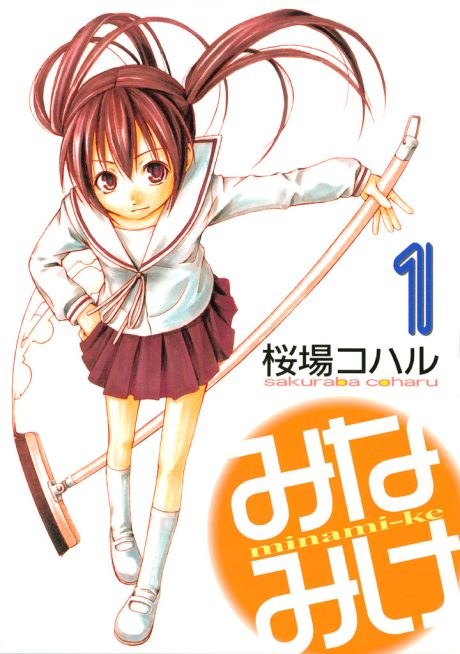

Anime
Anime
Manga2007 · Comedy, Slice of Life
Minami-ke
みなみけ
AniList7.3
Animeter—
4 seasons52 ep
MangaUnclear
4 seasons, 52 episodes
In airing order. Episode numbers on this site count straight through every season, so season 2 starts at episode 14.
1
2007 · TV
Minami-ke
Episodes1–1313 ep
2
2008 · TV
Minami-ke: Okawari
Episodes14–2613 ep
3
2009 · TV
Minami-ke: Okaeri
Episodes27–3913 ep
4
2013 · TV
Minami-ke Tadaima
Episodes40–5213 ep
Films, OVAs and specials
Not counted in the episode numbers above.
·
2012 · OVA
Minami-ke: Omatase
·
2013 · OVA
Minami-ke Natsuyasumi
Sources: AniList